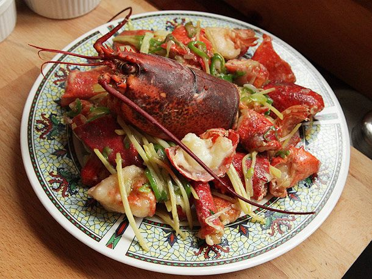

Cantonese Style Lobster with Ginger & Scallions
Reference:
source

Description
Large chunks of shell-on lobster stir-fried with scallions, ginger, hot peppers, and yellow chives in a lightly seasoned sauce
Ingredients
- 1/4 cup Shaoxing wine or dry sherry
- 1 tablespoon soy sauce
- 1/2 cup cornstarch, divided
- 1/2 cup homemade or store-bought low sodium chicken stock
- 2 lobsters, preferably soft shell, about 1 1/4 pounds each
- 1 quart vegetable, canola, or peanut oil
- 1/2 teaspoon white pepper
- 1 teaspoon salt
- 2-inch knob ginger, peeled and cut into fine matchsticks
- Small bunch scallions, whites finely sliced on the bias
- 1 long green hot pepper, finely sliced on the bias
- 12 yellow chives, cut into 2-inch pieces (optional)
Steps
-
Combine wine, soy sauce, and 1 tablespoon corn starch in a small bowl and mix with a fork until smooth. Stir in chicken stock. Set aside.
-
Add 1 inch of water to a pot or wok fitted with a steamer attachment and bring to a boil. Add lobsters and steam for 3 minutes. Remove and transfer to cutting board. Allow to cool slightly.
-
Twist off tail and claws from lobsters. Remove guts from lobster head and rinse clean for garnish. Using a heavy chef's knife or cleaver, split tails in half lengthwise, then into thirds crosswise forming six pieces. Transfer to a large bowl. Cut both knuckles from each claw and add to bowl with tails. Remove small side of claw by breaking it off by hand and add to bowl. Cut each claw in half exposing meat and add to bowl.
-
Heat oil to 375°F in a large wok, adjusting heat as necessary to maintain temperature. Season lobster with salt and pepper. Add remaining cornstarch to bowl with lobster and toss until pieces are well-coated. Carefully add lobster pieces to hot oil one piece at a time until half of them have been added. Fry, agitating occasionally with a metal spider, until the cornstarch coating is crisp and pale golden brown, about 1 1/2 minutes. Transfer to a colander set in a bowl to drain. Repeat with remaining lobster pieces.
-
Pour off all but 1 tablespoon oil (save it for another use) and return wok to high heat until lightly smoking. Add ginger, scallions, hot pepper, and yellow chives (if using) and cook, stirring and tossing constantly, until fragrant and very gently softened, about 1 minute. Return lobster to pan and toss to coat. Stir up wine mixture (cornstarch may have settled to the bottom of the bowl) and add to wok. Cook, stirring and tossing constantly until mixture has bubbled and thickened, coating the lobster and vegetables. Immediately transfer to a serving platter, garnish with lobster heads, and serve.